Powders Crib – Grafikdesign & Art Direction für Musik, Kultur und Bühne
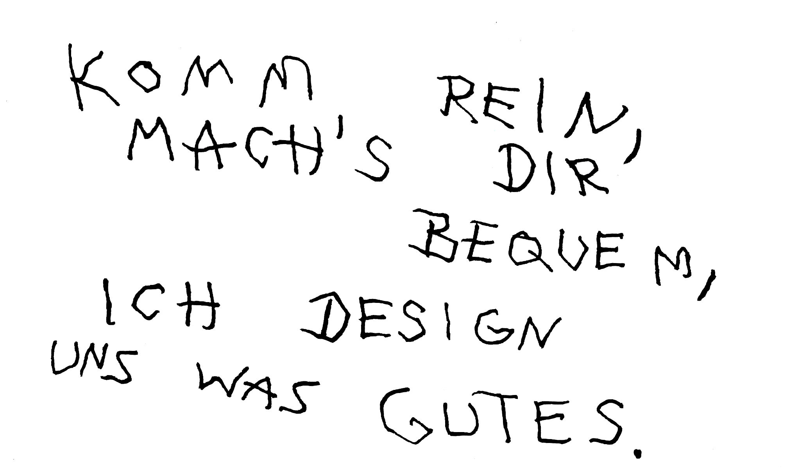
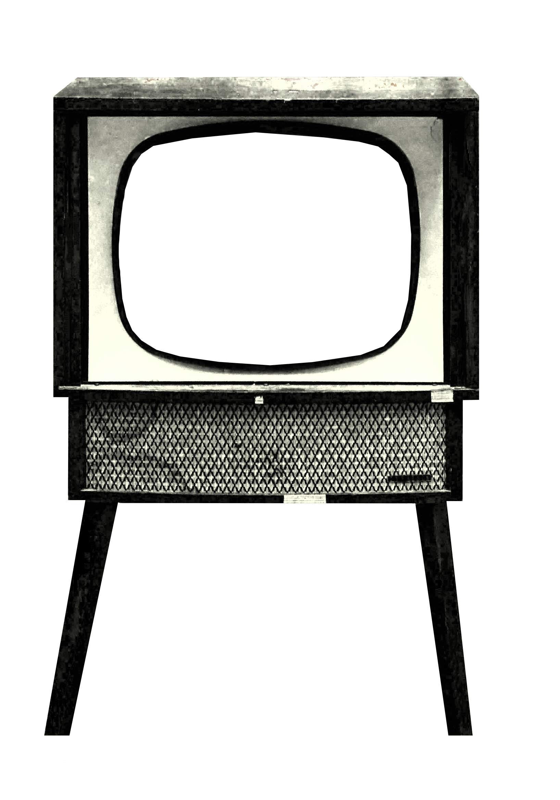
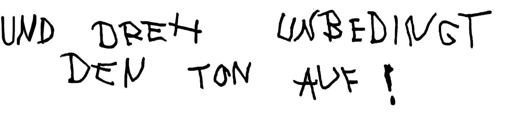
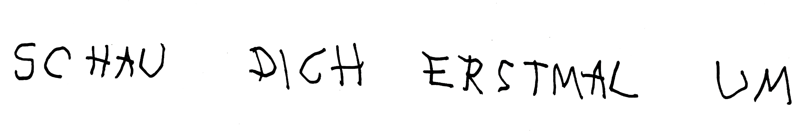
Portfolio – Grafikdesign und Art Direction von Powders Crib
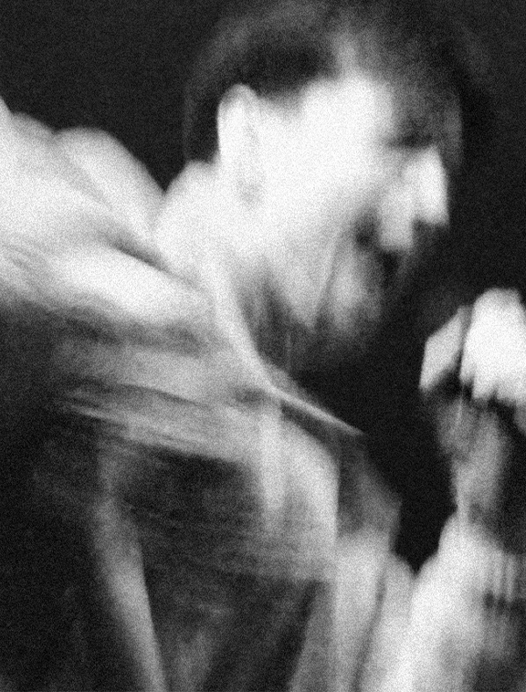
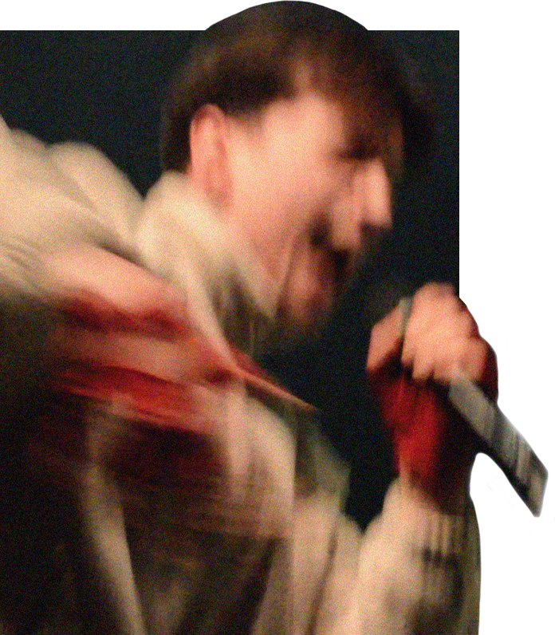
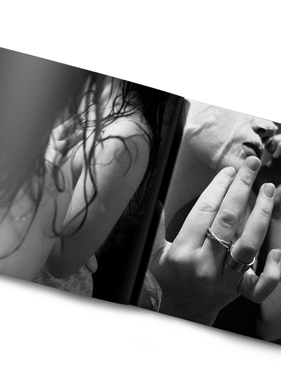
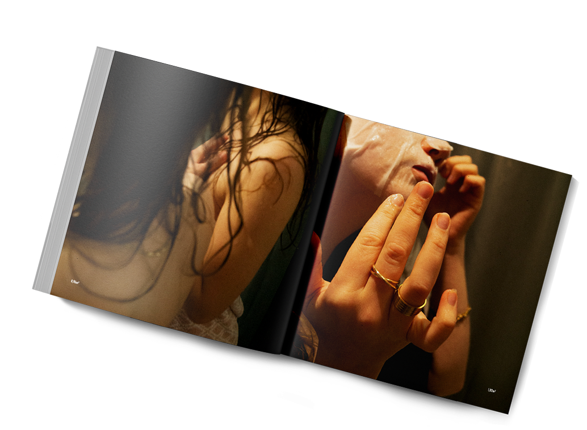
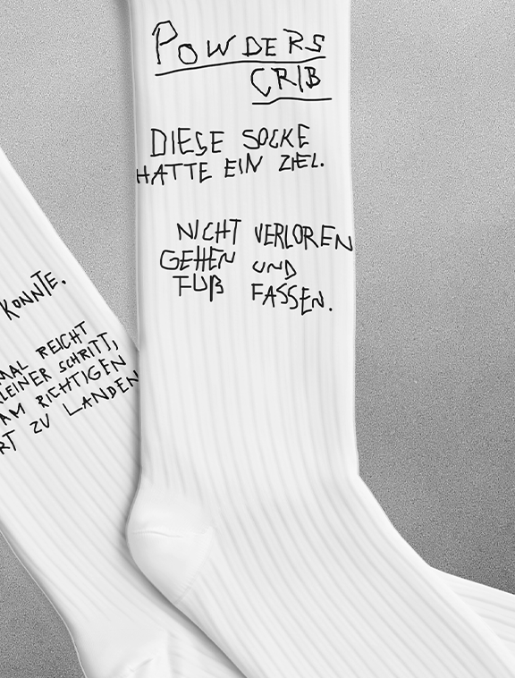
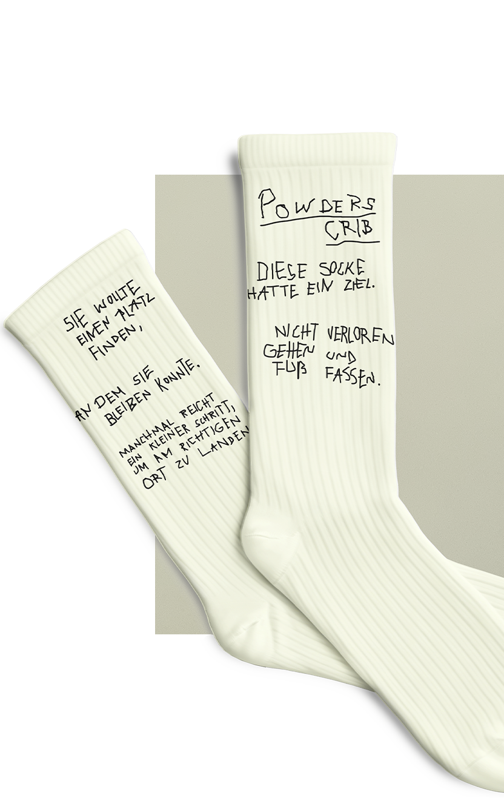
Zusammenarbeit – Grafikdesign und Art Direction von Powders Crib
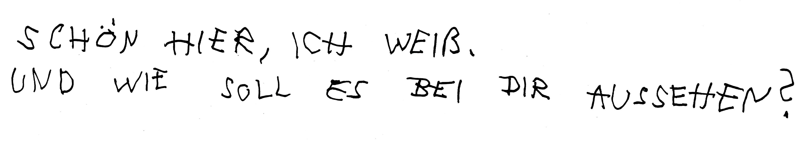
Erste Kontaktaufnahme
Stell dir vor, du ziehst um. Neue Wohnung, leere Räume, alles möglich. Du stehst mit ein paar Kartons vor der Tür und weißt nicht genau, wie das alles aussehen soll. Ich auch noch nicht. Deshalb gehen wir rein.
Angebot & Briefing
Im leeren Zimmer schmieden wir Pläne. Machen wir komplett Tabula rasa oder recyclen wir ein paar von deinen alten Sachen? Ton in Ton oder querbeet? Kleine Renovierung oder einmal kernsanieren? Was davon drin ist, loten wir beim Kassensturz aus.
Konzept-Entwicklung & Feedback
Und dann machen wir Nägel mit Köpfen. Ich schlage vor, wo die Möbel hinkommen. Du dirigierst, dass das Sofa nicht in die Ecke kommt, denn du brauchst die perfekte Sicht aus der perfekten Liegeposition auf deinen Fernseher. Alles klar, wir stellen um.
Umsetzung & Feedback
Langsam kommt Leben in die Bude. Du fängst an, dir vorzustellen, wie es einmal aussehen wird. Ich schiebe und rücke, bis es sitzt.
Finalisierung
Der Teppich liegt noch einen Zentimeter schief. Ein letzter Haken an die Wand. Frische Bettwäsche. Jetzt ist's offiziell.
Alle happy? Alle happy.
Willkommen zu Hause.
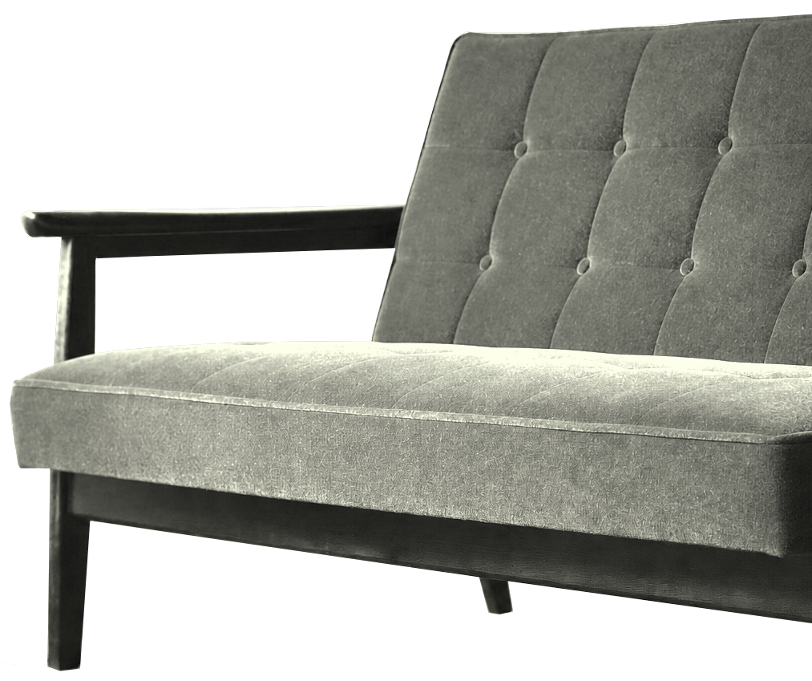
Über mich – Grafikdesign und Art Direction von Powders Crib
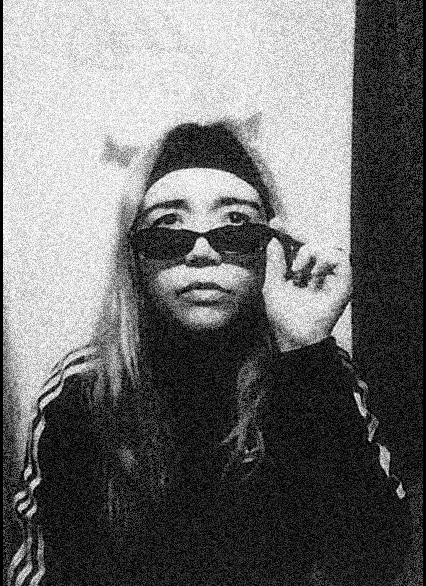
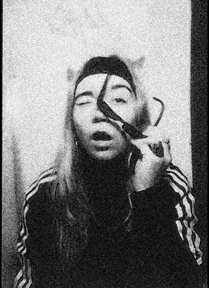
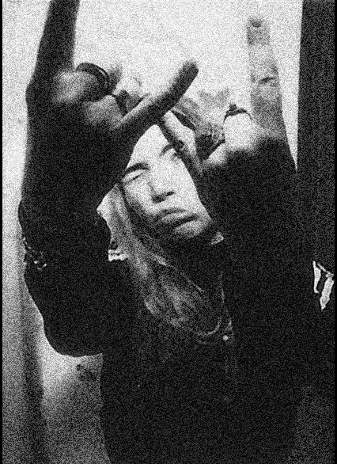
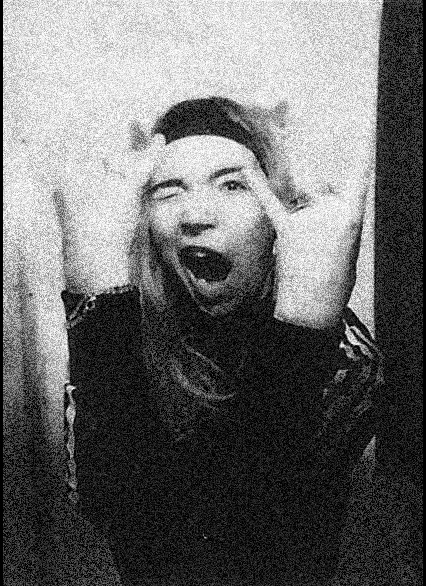
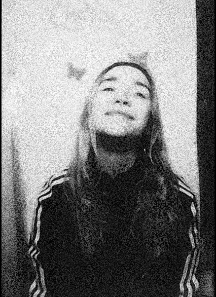
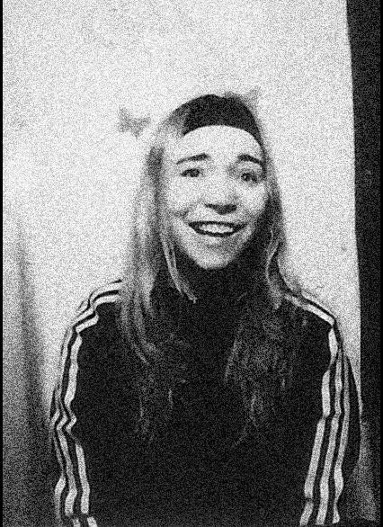
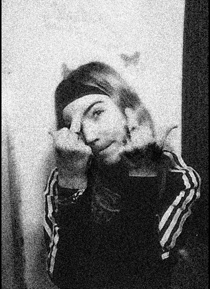
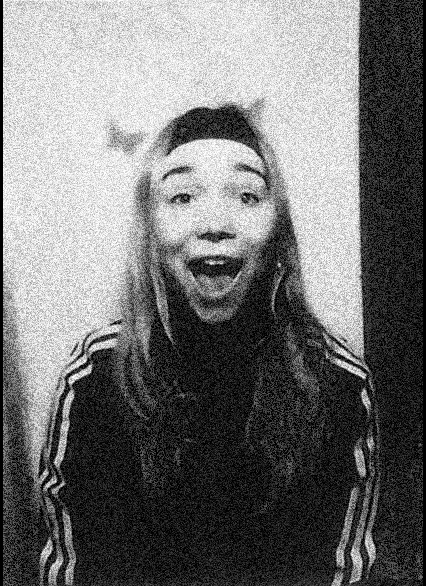
Kennst du das Lied Ich liebe das Leben von Vicky Leandros? Das könnte der Soundtrack meines Lebens sein (weiß nicht, wie ich es weniger pathetisch ausdrücken soll). Weil ich ganz doll darauf vertraue, dass sich schon alles fügt. Dass alles irgendwie hinhaut. Als Kind wollte ich immer Schöne-Sachen-Verkäuferin werden. Und siehst du? Hat ja irgendwie hingehauen.
Ich bin übrigens Pauline und ein Freund von mir nennt mich immer Powder. Daher der Name: Powders Crib. Am liebsten arbeite ich im Bereich Musik, Tanz, Kultur, Bühnen und Festivals. Mein Weg ins kreative Arbeiten startete als Mediengestalterin in einer Umweltstiftung in Osnabrück, weiter nach Indien in die Öffentlichkeitsarbeit einer traditionellen Weberei und schließlich ins Kommunikationsdesign-Studium nach Hamburg. Und jetzt gibt's Powders Crib. Mein kleines Studio für Art Direction und Grafikdesign. Würde sagen das Handwerk sitzt, bist hier in guten Händen.